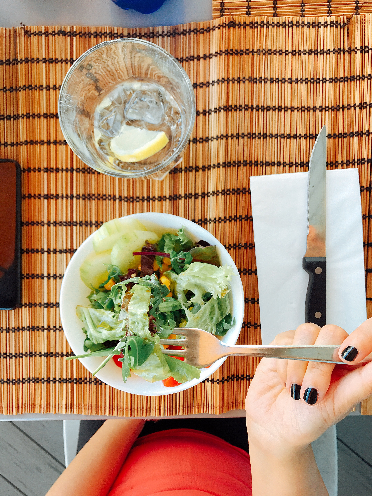
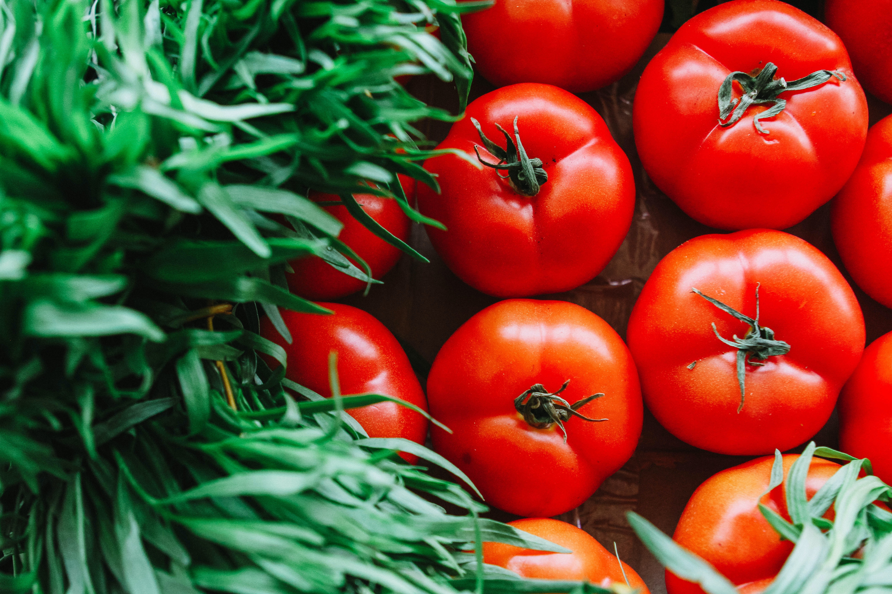

Regularność posiłków sprzyja dowozowi odpowiedniej ilości energii w ciągu dnia, wpływa pozytywnie na samopoczucie, koncentrację oraz utrzymanie odpowiedniej masy ciała. Najlepiej jadać między 3 a 5 posiłków dziennie. Jeśli posiłki są bardziej obfite, wystarczy śniadanie, obiad i kolacja. Gdy preferuje się mniejsze posiłki, należy w ciągu dnia dołożyć 1 lub 2 przekąski. Dla optymalnego zdrowia i szczupłej sylwetki ważne jest, aby nie podjadać, nie zamieniać posiłków na kilkanaście przekąsek dziennie. Sprzyja to przejadaniu się, wybieraniu bezwartościowego jedzenia i odbija się negatywnie na metabolizmie. Optymalne pory posiłków to śniadanie do godziny po przebudzeniu, obiad w środku dnia, w porze największej aktywności i kolacja 2-3 godziny przed snem.

Z tym stwierdzeniem zgodzi się każdy dietetyk niezależnie od wyznawanego podejścia. Im wyższy stopień przetworzenia żywności, im dalej od natury, tym gorzej dla zdrowia. Wszelka żywność w proszku, fast food, dania gotowe i produkty z długą listą składników nie powinny pojawiać się w zdrowej diecie. Dodatki do żywności stworzone przez człowieka nie są dokładnie przebadane i nie wiadomo, jakie skutki zdrowotne w długofalowym ujęciu przyniesie ich stosowanie. Mogą one być rozpoznawane przez organizm jako ciało obce i powodować reakcję układu odpornościowego oraz oddziaływać negatywnie na mikroflorę organizmu i stan jelit. Typowa dieta zachodnia odbija się na stanie żołądka, jelit, trzustki i wątroby oraz nerkach, które muszą przefiltrować i wydalić wszelkie chemiczne dodatki. Zdrowa dieta to jadłospis złożony z produktów bliskich naturze, nieprzetworzonych, z krótkim składem i wiadomego pochodzenia.

Warzywa powinny stanowić podstawę każdej zdrowej diety. Są źródłem witamin, składników mineralnych, przeciwutleniaczy i błonnika. Ich dobór może być indywidualny w zależności od ewentualnych chorób, jednak generalnie warzywa to najzdrowsza grupa produktów spożywczych. Najlepiej, jeśli będą surowe, ale pieczone, gotowane na parze i w niewielkiej ilości wody również są cennym elementem jadłospisu. Także IŻŻ podkreśla rolę warzyw. Mimo że na jednym piętrze piramidy zdrowego żywienia warzywa i owoce są umieszczone razem, zaleca się, aby warzywa stanowiły ¾ dziennej porcji, a owoce ¼.
Owoce najlepiej jeść na jeden posiłek w ciągu dnia. W drugim mogą stanowić dodatek. Dziennie nie powinno być ich więcej niż 200-300 g. Dlaczego? Owoce są źródłem cukrów prostych. Mimo zawartości witamin i błonnika, nie wolno ich jeść zbyt dużo, ponieważ sprzyjają wyrzutom insuliny i wahaniom poziomu glukozy we krwi, a takie stany mają liczne konsekwencje zdrowotne. Owoce, w przeciwieństwie do warzyw, nie są bezkarną przekąską. Ich niekontrolowane podjadanie sprzyja tyciu i odkładaniu się brzusznej tkanki tłuszczowej, a w konsekwencji chorobom metabolicznym.
Przez dziesięciolecia węglowodany w postaci produktów zbożowych były propagowane jako najważniejszy element zdrowej diety i podstawowe źródło energii. Jednak w dzisiejszych czasach, kiedy mamy mało aktywności fizycznej, dużo siedzimy i niewiele chodzimy, węglowodany w każdym posiłku nie są koniecznością, a wręcz są niepotrzebne. Zapotrzebowanie na węglowodany rośnie wraz ze zwiększającą się aktywnością fizyczną, więc są one wskazane osobom, które ciężko pracują lub dużo trenują. W pozostałych przypadkach wystarczy dodatek węglowodanów w dwóch posiłkach. Ograniczając węglowodany, trzeba zastąpić je innym składnikiem energetycznym czyli tłuszczem. Pamiętajmy, że w głównej mierze nie tyje się od tłuszczów, a od nadmiaru węglowodanów. Zmniejszenie ilości węglowodanów na korzyść zdrowych tłuszczów ogranicza fluktuację insuliny w trakcie dnia, z czego wynika większy poziom energii, większa sytość, brak napadów głodu, ograniczenie podjadania i lepszy skład ciała.
Węglowodany nie są „złem wcielonym”, ale nie są też produktem, bez którego dieta traci na wartości. Ważny jest dobór odpowiednich źródeł węglowodanów. Pierwszym celem jest spożywanie produktów pełnoziarnistych, z mąki razowej zamiast z wysokooczyszczonej. Najlepszym wyborem jeśli chodzi o pieczywo jest chleb żytni na zakwasie. Żyto jest dużo mniej zmodyfikowanym zbożem niż pszenica, a zakwas redukuje gluten oraz kwas fitynowy, przez co składniki mineralne z chleba są lepiej przyswajalne. Najbardziej odżywcze kasze to komosa ryżowa (quinoa), amarantus i gryka. Czy trzeba całkowicie rezygnować z glutenu? To zależy od przypadku, jednak z pewnością każdemu można polecić ograniczenie spożycia produktów glutenowych.
To, że cholesterol z diety odpowiada za miażdżycę i choroby serca, jest jednym z największych mitów żywieniowych. Badania naukowe wykazały, że cholesterol w produktach spożywczych w bardzo niewielkim stopniu wpływa na poziom cholesterolu we krwi, a wpływ ten jest nieistotny klinicznie w chorobach układu krążenia. Co to oznacza? Że jajka i podroby są bezpiecznym elementem diety i nie zwiększają ryzyka zawału serca. Nowe analizy pokazują, że tłuszcze zwierzęce (kwasy tłuszczowe nasycone) oraz cholesterol w diecie nie są istotnymi czynnikami ryzyka miażdżycy i zawału, a niski cholesterol bardziej skraca życie niż wysoki! Choroby serca oraz miażdżyca są efektem uszkodzenia śródbłonka naczyń krwionośnych i przewlekłego stanu zapalnego, który może być wywołany szeregiem czynników, m.in. paleniem papierosów, wysokim poziomem cukru we krwi, niewłaściwą proporcją w diecie kwasów tłuszczowych omega-6 do omega-3, niedoborem witamin z grupy B, C, K2 oraz D3.
Cukier rafinowany pod różnymi postaciami można znaleźć dosłownie wszędzie, nawet w ketchupie i wędlinach. Eliminując cukier, trzeba zrezygnować z produktów, które w składzie mają również syrop glukozowo-fruktozowy, cukier inwertowany, cukier trzcinowy, maltodekstryny, syrop z agawy czy syrop ryżowy. Nadmiar cukru w diecie upośledza białka budujące struktury organizmu, co przekłada się na bardzo liczne stany chorobowe, np. narządu wzroku, nerek, układu nerwowego i demencję starczą. Im więcej cukru, tym większe wahania poziomu glukozy i insuliny we krwi, a co za tym idzie – zwiększone ryzyko chorób metabolicznych i tycia.
Do picia powinna służyć woda i ziołowe herbaty. Słodzone napoje to ogromna dawka cukru i chemicznych dodatków. Soki owocowe też powinny być jedynie dodatkiem. Picie soków i napojów w dużych ilościach sprzyja glikacji czyli przyłączaniu się cząsteczek glukozy do białek, co upośledza ich funkcjonowanie i przyspiesza starzenie organizmu. Odpowiada także za wzrost wagi, podwyższanie poziomu trójglicerydów we krwi i otłuszczanie wątroby.
Mleko jest bardzo kontrowersyjnym produktem. Oficjalne źródła zalecają wypijanie 2 szklanek mleka dziennie jako głównego źródła wapnia w diecie. Nowe podejście mówi jednak o całkowitym wykluczeniu mleka od krów z przemysłowych hodowli oraz o dużym ograniczeniu nabiału. Mleko i przetwory mleczne zawierają dużo wapnia, jednak niekoniecznie wbudowuje się on w kości. Potwierdzają to nowe analizy, z których wynika m.in., że na obszarach o dużym spożyciu mleka większy odsetek kobiet w wieku pomenopauzalnym cierpi na osteoporozę. Duża zawartość fosforu w nabiale powoduje, że aby zrównoważyć jego ilość we krwi po spożyciu, z kości wypłukiwany jest wapń. Mleko przez wiele osób jest nietolerowane i źle trawione. Powoduje wzdęcia i inne problemy przewodu pokarmowego. Nabiał, najlepiej w postaci ukwaszonej (czyli lepiej strawnej) powinien pojawiać się w diecie nie częściej niż raz dziennie. Najlepiej, gdy pochodzi on od krów wypasanych na łąkach i jest wytwarzany tradycyjnymi metodami. Wtedy też jest dobrym źródłem bakterii probiotycznych.